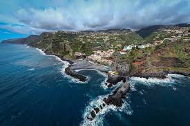

Turismo na Madeira
|
A Madeira ou Região Autónoma da Madeira é uma região e arquipélago situada no Oceano Atlântico, com a capital localizada na cidade do Funchal, tendo 250 769 habitantes em 2021[3], sendo a sexta região mais populosa do país, com uma densidade populacional de 313 hab./km2, sendo a segunda maior área urbana do país, e uma área total de 801 km2, sendo a sétima região mais extensa do país. É uma das sete regiões de Portugal, constituída por 54 freguesias[4], compreendendo em 11 municípios e sendo no mesmo tempo constituída pela mesma e única subregião, tendo o mesmo nome. O Estatuto Político-Administrativo da Região Autónoma da Madeira é um dos dois governos regionais autónomos nacionais e coordena as políticas da região. |
imagem Da Ilha da mandeira  |
| Vídeo de Apresentação da Ilha da Madeira | Mapa da madeira |